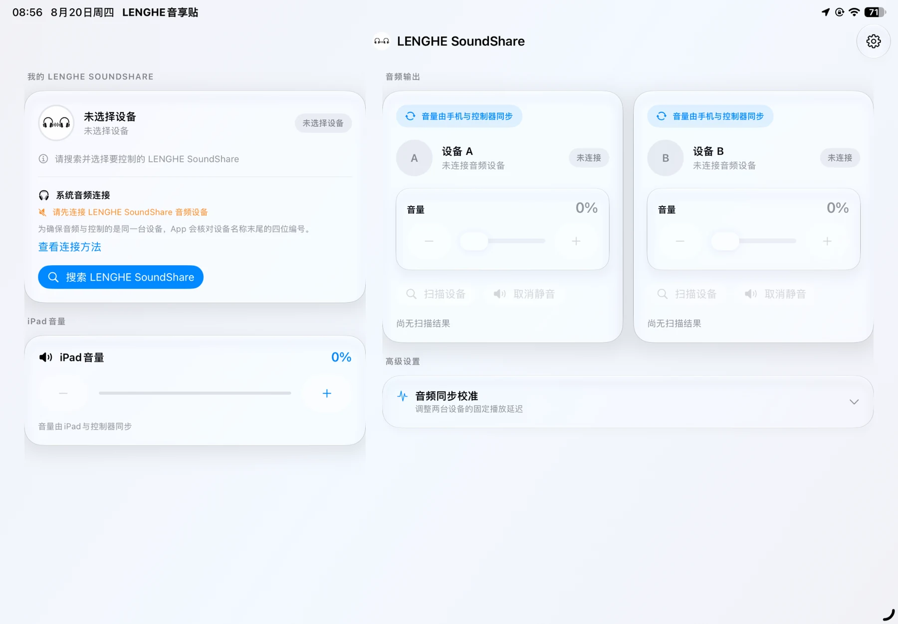
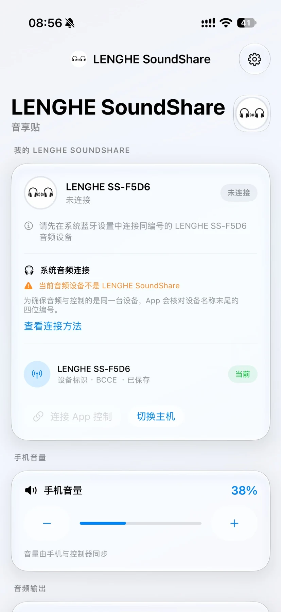
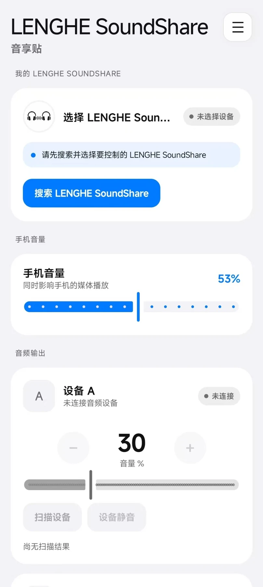
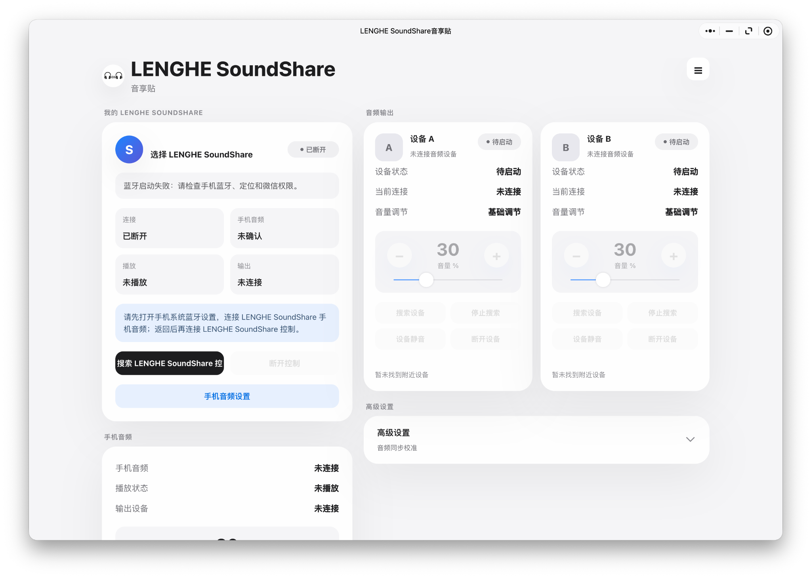
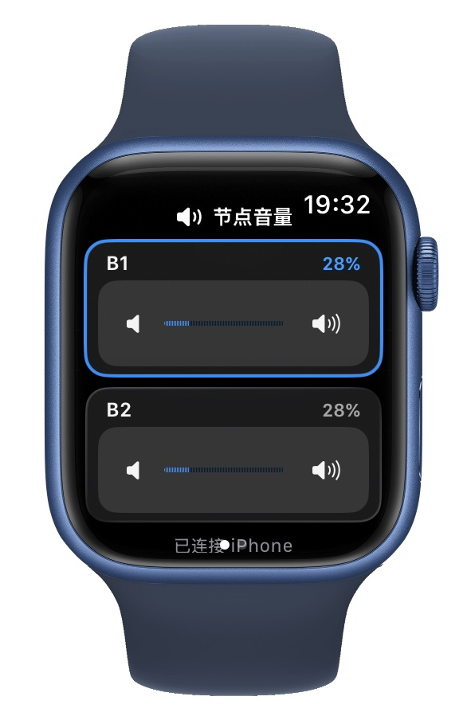
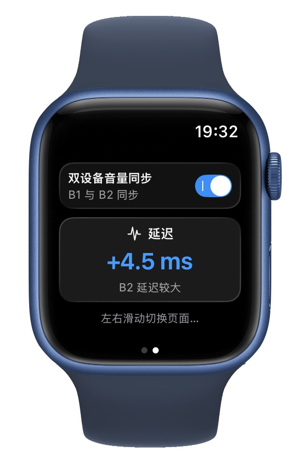

跨生态共享
连接手机或平板作为音源，再同步分发到多台蓝牙耳机或音箱。
VALUE
音享贴围绕“音源终端 — 音享贴中继 — 多终端播放设备”的架构工作，强调跨品牌兼容、手动可视化校准与多设备独立控制。
连接手机或平板作为音源，再同步分发到多台蓝牙耳机或音箱。
以轻量化硬件中继的思路切入，强调便携、低门槛与快速落地。
通过可视化延迟调节解决不同设备的固有播放时差，适配民用场景。
支持 iPad、iPhone、Android、微信小程序与 Apple Watch 等交互形态。
UI SHOWCASE
在这个项目里，UI 不是装饰，而是产品逻辑的一部分：设备连接、同步校准、音量控制、状态确认都需要更直观的交互来承载。
适合在更大视图下查看多设备状态与高级设置。

用于手机侧进行连接、音量控制与播放状态管理。

强调更直观的设备卡片与数值型控制布局。

适合作为更低门槛的设备控制入口，方便用户快速连接与管理。

在腕上查看与微调不同节点设备的音量状态。

在更轻量的场景里查看双设备同步状态与延迟信息。

SCENES
多人使用各自耳机同步观影或听音，兼顾私密性与陪伴感。
同时连接耳机与音箱，在监听与氛围之间找到更轻量的平衡。
在露营、团建、骑行等活动中临时搭建同步音响系统。